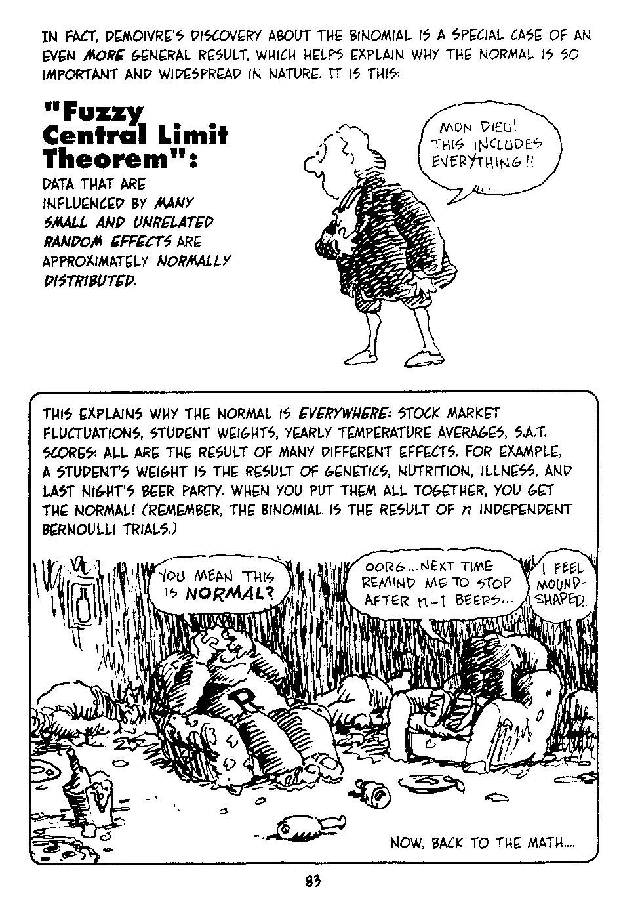

year boys girls
1 1629 5218 4683
2 1630 4858 4457
3 1631 4422 4102
4 1632 4994 4590
5 1633 5158 4839
6 1634 5035 4820Nonparametric Statistics
Introduction: Lecture 0
Jyotishka Datta
Virginia Tech
2026-08-24
About Me
- Associate Professor at VT Statistics.
- Research area: Statistics / Machine Learning / (Applied) Probability.
- Statistical methods for high-dimensional data with structures.
- Applications: human genomics, crime forecasting, infectious disease.
- Born in Calcutta (Kolkata), India. Attended Indian Statistical Institute.
- Mumbai, India — Barclays Bank, PLC — modelling credit card default and fraud detection.
- Purdue University: Ph.D. in Statistics.
- Postdoc at Duke University and SAMSI (Statistics and Applied Mathematical Sciences Institute).
Syllabus
Outline of This Course — Part I
Foundations and One/Two-Sample Methods
- Why nonparametric? Parametric vs. distribution-free inference; Pitman efficiency
- Permutation tests: the unifying idea behind most of what follows
- Bootstrap and resampling, confidence intervals, bootstrap hypothesis tests
- Ranks and order statistics (just enough theory to understand what follows)
- One-sample and paired-sample tests: sign test, Wilcoxon signed-rank test
- Two-sample tests: Mann–Whitney, Wilcoxon rank-sum, and permutation-based alternatives
- Multiple-sample methods: Kruskal–Wallis and Friedman tests
Outline of This Course — Part II
More Advanced Topics
- Rank-based linear models — ranks inside
lm(), Spearman and Kendall correlation - Goodness-of-fit tests: KS, Lilliefors, Anderson–Darling
- Kernel Density Estimation and \(k\)-nearest neighbors
- Bootstrap in depth : bootstrap in regression, the parametric bootstrap
- Survival Analysis: Kaplan–Meier estimator and log-rank test
- Implement all of the above in
R, with and without packages
Note
If you have taken CMDA 2006 with me, some of these will feel familiar, but the treatment will be faster and more theoretical throughout. This is only a tentative list of topics and may change to accommodate this class.
How to Reach Me
- Office: Hutcheson 409C
- Email: jyotishka@vt.edu
(Subject line: STAT 3504 + [Your query]) - Class time: TR 2:00–3:15 pm
- Office Hours: Will be updated on Canvas
- Graduate Teaching Assistant (GTA): Jacob Gareis
- Email: jacobgareis@vt.edu
- Office Hours: Will be updated on Canvas
Grades
Grade Distribution:
- Two statistics midterms: 25% each
- Homework: 25%
- In-class activities / exercises: 25%
- Final Exam: 25%
| Interval | Grade | Interval | Grade |
|---|---|---|---|
| [93, ∞) | A | [73, 77) | C |
| [90, 93) | A− | [70, 73) | C− |
| [87, 90) | B+ | [67, 70) | D+ |
| [83, 87) | B | [63, 67) | D |
| [80, 83) | B− | [60, 63) | D− |
| [77, 80) | C+ | [0, 60) | F |
Homework Rules
- Homework assignments will be frequent and will require using R.
- Extensions will not be granted. Assignments accepted up to 24 hours late with a 20% penalty.
- You may discuss assignments with others, but what you turn in must be your own work.
- No sharing of written work or solutions.
- We grade solutions, not answers — show your work. Answers without justification receive no credit.
- All homework will have one week to submit unless otherwise announced.
- The lowest homework grade will be dropped.
Policy on Use of Generative AI
Generative AI Policy
You may use tools such as ChatGPT or Copilot to support learning, not replace your authorship. When I grade an assignment, I should be grading your work.
Permitted: Brainstorm, outline, debug, revise, or generate examples that you verify and rewrite. Use AI only when the assignment allows it.
Not permitted: Submitting AI text or code as your own; using AI on quizzes or exams unless explicitly allowed; entering confidential or restricted data.
Disclosure: If you used AI, add a one-line “AI use” note at the end listing the tool, what you asked, and how you changed or verified the output.
Example: “AI use: ChatGPT for an outline; I rewrote sections and checked citations.”
Accountability: You are responsible for accuracy, originality, and citation. Work may be checked through follow-up questions or originality tools. Your voice and reasoning must remain prominent.
Some References
- No required textbook. Following the lecture slides should be sufficient for tests.
- Primary reference for concepts and homework:
Nonparametric Statistical Inference, 5th ed. — Gibbons & Chakraborti - Other references:
- Higgins. Introduction to Modern Nonparametric Statistics.
- Hollander and Wolfe. Nonparametric Statistical Methods.
- Sprent and Smeeton. Applied Nonparametric Statistical Methods.
- Conover. Practical Nonparametric Statistics.
- You are responsible for taking notes, including from class discussions you may have missed.
Software
- We will use R throughout the course. Install it on your laptop (or computing resource of choice).
- Available free from: http://cran.r-project.org/
- Recommended interface: RStudio — https://www.rstudio.com/
- Useful online resources:
- ATS UCLA R Page: http://statistics.ats.ucla.edu/stat/r/
- Quick R: http://www.statmethods.net/
- R-Bloggers: https://www.r-bloggers.com/
- R for Data Science: http://r4ds.had.co.nz/
Introduction
Parametric and Nonparametric Statistics
- Parameter: A constant (usually unspecified) that characterises a population — broadly includes any description of population characteristics.
- Statistic: A function of observations that does not depend on unknown parameters.
- Inference: Using statistics to infer something about the population — mainly estimation and hypothesis testing. What makes it scientific is the ability to make statements about accuracy or reliability.
- Some statistics are more popular than others, e.g. sample mean vs. median. Why?
- Central Limit Theorem: The sample mean from a large sample is approximately normally distributed.
Central Limit Theorem
- This is the reason we see Normal distributions everywhere!
- The Central Limit Theorem is one of the most important results in all of mathematics.
- The sum of \(N\) independent, identically distributed random variables is approximately Normally distributed.
- Example: if you flip a coin many times, the probability of getting a given number of heads follows a Normal curve with mean equal to half the total number of flips (De Moivre’s classic result).
General CLT

Illustration of the Central Limit Theorem — details in slide

Statistical cartoon — details in slide
Parametric versus Nonparametric
Parametric Inference
- Parametric Inference: Estimation and inference based on an assumed form of the distribution.
- Example (modified from G&C 4.13): Scores on a certain IQ test are assumed normally distributed, \(X_i \sim N(\mu,\, \sigma^2 = 100)\). Eighteen girls were tested with scores:
114, 81, 87, 114, 113, 87, 111, 89, 93, 108, 99, 93, 100, 95, 93, 95, 106, 108. - Question: Is the mean IQ significantly greater than 100?
- Hypotheses: \(H_0: \mu = 100\), \(H_A: \mu > 100\)
- We can carry out a \(z\)-test based on the normality assumption.
- Conclusions are valid as long as the assumptions are valid.
Questions to Ask About Any Test
- What are the assumptions behind a particular test?
- For example, the \(z\)-test assumes IID, normally distributed data and known variance.
- How do we test if those assumptions are valid?
→ Goodness-of-fit tests, e.g. Lilliefors or Shapiro–Wilk tests for normality.
- Can we make other, weaker assumptions? (e.g. symmetry or independence?)
- How do we test the hypothesis without the distributional assumptions?
→ Nonparametric alternatives.
- You can also ask a more basic question: are the numbers really random? There are methods for that too.
One-Sample \(Z\)-Test
- Assumption: \(X_1, X_2, \ldots, X_n \overset{\text{iid}}{\sim} N(\mu,\, \sigma^2)\), \(\mu\) unknown, \(\sigma^2\) known.
- Null hypothesis: \(H_0: \mu = \mu_0\)
- Test statistic:
\[Z = \frac{\bar{X} - \mu_0}{\sigma / \sqrt{n}}\]
Under \(H_0\), \(Z \sim N(0, 1)\).
- If the observed \(Z\) is “too large,” it is unlikely to have come from \(N(0,1)\).
- We control how large is “too large” by fixing the Type I error:
\[\text{Type I error} = P(\text{Reject } H_0 \mid H_0 \text{ true}) \leq \alpha\]
Z-Test, Continued
\[Z = \frac{\bar{X} - \mu_0}{\sigma / \sqrt{n}}\]
P-values are exact as long as \(\bar{X}\) is normally distributed — guaranteed when \(X_i \sim N(\mu, \sigma^2)\), giving \(\bar{X} \sim N(\mu,\, \sigma^2/n)\).
But this is a strong assumption! What if \(X_i\)’s are bounded, discrete, or skewed?
The answer is “yes, you can still apply these tests” — if your sample size is large.
You don’t need individual \(X_i\)’s to be normal, as long as \(\bar{X}\) is approximately normal.
This is what the CLT guarantees — but you need a large enough sample, and the CLT conditions must hold.
Tests Based on Normality
There is nothing exceptional about the \(z\)-test.
- If \(\sigma^2\) is unknown and estimated by \(S^2\) → \(t\)-test
- Single sample → paired \(t\)-test → two-sample \(t\)-test → ANOVA (\(K\) samples)
All of these are parametric tests that are:
- Exact under normality
- Approximately correct for large samples (by CLT)
So one good reason to look for alternative methods is small sample size.
Sample Size Requirements for Parametric Tests with Non-Normal Data
Parametric tests can still be used with non-normal data, given sufficient sample size:
| Parametric Analysis | Sample Size Required (Non-Normal Data) |
|---|---|
| 1-sample \(t\)-test | \(n > 20\) |
| 2-sample \(t\)-test | Each group: \(n \geq 15\) |
| One-Way ANOVA (2–9 groups) | Each group: \(n \geq 15\) |
| One-Way ANOVA (10–12 groups) | Each group: \(n \geq 20\) |
But small sample size is not the only reason to switch to nonparametric methods.
Non-Parametric Methods
- The main attraction: fewer assumptions about the underlying distribution.
- Advantage: Robustness — inference remains valid under model misspecification.
- Price to pay: If distributional assumptions are true, parametric methods often have more power.
- If data truly come from \(N(\mu, \sigma^2)\) and you use a test based on that, you have a higher chance of correctly detecting the alternative.
- On the other hand, if assumptions are wrong (e.g. data follow a Cauchy but you assume Normal), nonparametric methods can be infinitely more powerful.
“The basic idea of nonparametric inference is to use data to infer an unknown quantity while making as few assumptions as possible.”
Distribution-Free?
- “Nonparametric” is actually a misnomer. A more accurate term: Distribution-Free Statistics.
- Some prefer the term infinite-dimensional inference.
- We will still estimate and test hypotheses about parameters — but the form of the distribution is not assumed.
- Often we only assume that random variables are independent and identically distributed (IID).
- Test and estimation procedures require relatively fewer assumptions about the population distribution.
History of Nonparametric Statistics
The First Nonparametric Test
These anecdotes are mainly from Sprent & Smeeton’s book and The Lady Tasting Tea by David Salsburg.
The first chapter of the Book of Daniel records that on the orders of Nebuchadnezzar certain favoured children were to be specially fed on the king’s meat and wine for 3 years. Reluctant to defile himself with such luxuries, Daniel pleaded that he and three of his brethren be fed instead on pulse for 10 days. After that time the four were declared ‘fairer and fatter in flesh than all of the children which did eat the portion of the king’s meat’. This evidence was taken on commonsense grounds to prove the superiority of a diet of pulse.
Although the biblical analysis is informal, it contains the seed of a nonparametric test.
Early History
John Arbuthnot (1710) observed that in each year from 1629 to 1710, the number of males christened in London exceeded the number of females. He used this to test whether the birth ratio was 1:1. (Binomial test?)
Data: https://www.openintro.org/data/index.php?data=arbuthnot
Francis Galton (1892) developed a measure — which he called a “centissimal scale” — to assess agreement between patterns (categorical data) on corresponding fingertips on left and right hands.
Karl Pearson (1900) proposed the well-known chi-squared goodness-of-fit test for any discrete distribution.
C. Spearman (1904) defined the rank correlation coefficient that bears his name.
Wilcoxon and Mann–Whitney
- Frank Wilcoxon, working at American Cyanamide in the 1940s, was frustrated by the sensitivity of \(t\)-tests and ANOVA to outliers.
- He developed a nonparametric test that did not rely on distribution parameters, published in Biometrics (1945).
- He reportedly submitted the paper hoping it would be rejected so referees could point out his mistakes — but it was accepted, because no such methods had existed before.
- Unbeknownst to Wilcoxon, economists Henry B. Mann and graduate student D. Ransom Whitney were working on similar problems.
- They published in 1947, establishing a connection to Wilcoxon’s work.
- You will learn these as the Wilcoxon rank-sum test and Mann–Whitney U test.
Kolmogorov and Smirnov
- In the 1930s, Andrei Kolmogorov and his student Smirnov developed a different test for comparing two distributions — without using any parameters.
- This is the KS test, which you will study in detail.
Both tests allowed analysis without estimating distribution parameters, marking a shift in statistical methodology from Pearson’s era.
Pitman Efficiency and ARE
After Wilcoxon, Mann, and Whitney, some questions remained:
- If data truly follow a known parametric distribution (like Normal), how bad is it to ignore normality and use nonparametric tests instead?
Pitman (1948) addressed this, demonstrating that nonparametric tests perform better with slight deviations from parametric models, and suggested a preference for nonparametric tests in hypothesis testing.
We will study Pitman Efficiency and Asymptotic Relative Efficiency (ARE).
Tip
The large-sample efficiency of the Wilcoxon test compared to the \(t\)-test is \(\dfrac{3}{\pi} \approx 0.955\).
Further Developments
- The field grew in the 1960s with researchers exploring various nonparametric tests.
- Jaroslav Hájek published a unifying textbook in 1971, linking nonparametric tests to central limit theorem conditions. Much of the theory of linear rank tests is due to Hájek.
This course covers everything up to this point.
Challenges: The Bahadur–Savage Result
- The first major challenge to nonparametric methodology came from Raj Bahadur at the University of Chicago.
- R.R. Bahadur and L.J. Jimmie Savage (1956) identified issues with outliers affecting nonparametric test reliability.
“If outliers are rare and completely wrong observations, then nonparametric methods reduce their influence on the analysis. If outliers are part of a systemic contamination of the data, then shifting to nonparametric will make matters worse.”
I will describe the Bahadur–Savage result because it is striking and beautiful — but the mathematical tools needed to prove it are beyond the scope of this course.
Survival Analysis
- Another widely used nonparametric method: Kaplan–Meier survival analysis.
- Survival Analysis: A set of methods for analysing data where the outcome variable is the time until the occurrence of an event of interest.
- Events: death, disease occurrence, equipment failure, marriage, etc.
- Literally anything where we ask: How long does it take to…?

…and it’s a nonparametric method!
Survival Analysis, Continued
What’s the second most cited article?


- Later in the course, we will learn the Bootstrap.
- At least 10 papers in this list use Bootstrap or a version of it applied to biological data.
- The most well-known: Confidence limits on phylogenies: an approach using the bootstrap, Felsenstein (1985). Cited by 37,710.
Parametric vs. Nonparametric — Details
Parametric Inference — IQ Example
Example: Scores on a certain IQ test are normally distributed with \(\sigma^2 = 100\). Eighteen girls of similar age had scores:
\[114,\ 81,\ 87,\ 114,\ 113,\ 87,\ 111,\ 89,\ 93,\ 108,\ 99,\ 93,\ 100,\ 95,\ 93,\ 95,\ 106,\ 108\]
Question: Is the mean IQ significantly greater than 100?
\(H_0\): \(\mu = 100\) \(\quad\) \(H_A\): \(\mu > 100\)
→ Carry out a \(z\)-test based on the normality assumption.
Conclusions are valid as long as the assumptions are valid.
IQ Example — Nonparametric Version
- The IQ scores of 18 girls were:
114, 81, 87, 114, 113, 87, 111, 89, 93, 108, 99, 93, 100, 95, 93, 95, 106, 108. - We do not assume the scores are Normal, but we do assume the scores are IID.
- Changed Question: Is the
meanmedian IQ significantly greater than 100?
- We can use one-sample nonparametric tests (first module of this course).
Why Study Nonparametric Statistics?
- In many applications, there is no prior knowledge of the underlying distribution.
- If parametric assumptions are violated, parametric test procedures can give misleading or wrong results.
- For studies with small sample sizes (\(n \leq 30\)), Normal approximations do not work well.
- Therefore, we need methods that require very little model/distributional assumptions,
- or methods that are robust/insensitive to model/distributional assumptions,
- and that are insensitive to outliers.
Nonparametric Statistics offers a solution to all of these problems!
When to Use Nonparametric Methods?
Simplest Method: The Sign Test
- With correct assumptions (e.g. normality), parametric methods are more efficient — but often not by as much as you’d think.1
- Many nonparametric methods convert raw values to ranks and analyse those — which can be “wasteful” if a valid parametric alternative exists.
The simplest nonparametric test: Sign test
For the IQ scores of 18 girls (median = 100), roughly half of them should lie above 100 and half below — if the true median is 100.
- Let \(K_{100}\) = number of observations above 100.
- If \(K_{100}\) is too high or too low, the median is away from 100.
Sign Test — Calculation
| Obs | 114 | 81 | 87 | 114 | 113 | 87 | 111 | 89 | 93 |
|---|---|---|---|---|---|---|---|---|---|
| Diff | 14 | −19 | −13 | 14 | 13 | −13 | 11 | −11 | −7 |
| Sign | + | − | − | + | + | − | + | − | − |
| Obs | 108 | 99 | 93 | 100 | 95 | 93 | 95 | 106 | 108 |
|---|---|---|---|---|---|---|---|---|---|
| Diff | 8 | −1 | −7 | 0 | −5 | −7 | −5 | 6 | 8 |
| Sign | + | − | − | + | − | − | − | + | + |
\(K_{100}\) = Total number of positives = 7 out of 18.
Does this look too high or too low?
Sign Test — R Output
binom.test(7, 18)
Exact binomial test
data: 7 and 18
number of successes = 7, number of trials = 18, p-value = 0.4807
alternative hypothesis: true probability of success is not equal to 0.5
95 percent confidence interval: 0.1729859 0.6425488
sample estimates:
probability of success
0.3888889- P-value = \(P(\text{successes} \leq 7 \mid H_0\text{: Median IQ} = 100) = 0.4807\)
- We fail to reject \(H_0\): not enough evidence of a difference.
- The sign test is intuitive enough that anyone can understand the idea — we will revisit it in more detail.
Parametric Inference (Arbuthnot Example)
Example: John Arbuthnot (1710) recorded the number of male and female christenings in London for each year from 1629 to 1710. The data are available at: https://www.openintro.org/data/index.php?data=arbuthnot
Question: Is the proportion of male christenings significantly greater than 0.5?
Hypotheses: \(H_0: p = 0.5\) \(\quad\) \(H_A: p > 0.5\)
→ Carry out a one-sample \(z\)-test for a proportion based on the normality assumption (CLT for large \(n\)).
Conclusions are valid as long as the assumptions are valid.
Arbuthnot
- In each year from 1629 to 1710, the number of male christenings exceeded the number of female christenings.
- We do not assume any particular distribution, but we do assume the yearly counts are IID.
- Changed Question: Is the probability that males outnumber females in a given year significantly greater than 0.5?
- Let \(K\) = number of years in which male christenings exceeded female christenings. Under \(H_0: p = 0.5\), we expect \(K \approx 41\) out of 82 years.
Sign test
- We can use a sign test — or equivalently, an exact binomial test:
arbuthnot <- read.csv("https://www.openintro.org/data/csv/arbuthnot.csv")
K <- sum(arbuthnot$boys > arbuthnot$girls)
binom.test(K, nrow(arbuthnot), alternative = "greater")
Exact binomial test
data: K and nrow(arbuthnot)
number of successes = 82, number of trials = 82, p-value < 2.2e-16
alternative hypothesis: true probability of success is greater than 0.5
95 percent confidence interval:
0.964126 1.000000
sample estimates:
probability of success
1 Sign Test — Drawback
Question: Can you name one drawback of the Sign Test?
Answer: It completely ignores the actual magnitudes — low power (inefficient)!
Parametric Tests and Their Nonparametric Alternatives
| Parametric Test | Nonparametric Alternative |
|---|---|
| 1-sample \(t\)-test, Paired \(t\)-test | Sign test, Wilcoxon signed-rank test |
| 2-sample \(t\)-test | Mann–Whitney U test, Wilcoxon rank-sum test |
| One-Way ANOVA | Kruskal–Wallis test, Mood’s median test |
| Factorial DOE | Friedman test |
| Pearson’s correlation | Spearman’s rank correlation or Kendall’s \(\tau\) |
Other Nonparametric Methods
Most of these methods are very simple — in fact you can often derive them by replacing an observation with its rank (either within its own sample or a pooled sample).
I will show how many of these methods can be derived using ideas from linear regression — via the simple
lm()function in R — after we have understood them as standalone methods.Some popular nonparametric procedures are not alternatives but standalone tools — for example, the Bootstrap, which we will learn later.
There are also more advanced methods I won’t be able to cover: nonparametric regression, wavelets, nonparametric Bayes (e.g. Dirichlet processes).
Reasons to Use Nonparametric vs. Parametric Methods
Reasons for Nonparametric
- Small sample size (double-edged sword!)
- Ordinal data, ranked data, or outliers you cannot remove
- Data distribution doesn’t follow any known parametric distribution
- Median is a better representative than mean (e.g. income, grade distributions)
- Usually simpler tests, less affected by departures from ideal assumptions — but limited in power and conclusions
Reasons for Parametric
- Large sample — statistic is approximately Normal (CLT)
- Normality doesn’t hold, but other parametric tests apply, or data can be suitably transformed
- Can draw more conclusions at the population level
What’s Next
Please also fill out the survey about your R background on Canvas.
STAT 3504 — Virginia Tech | Jyotishka Datta